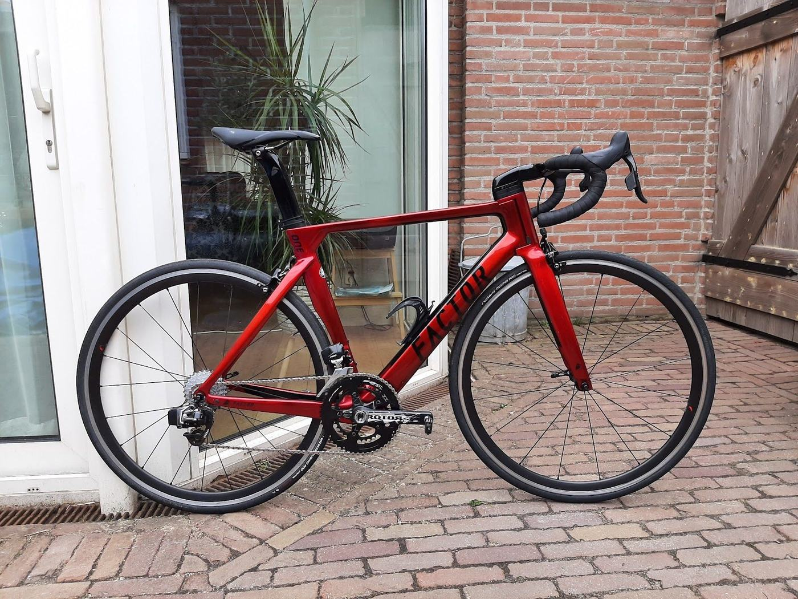
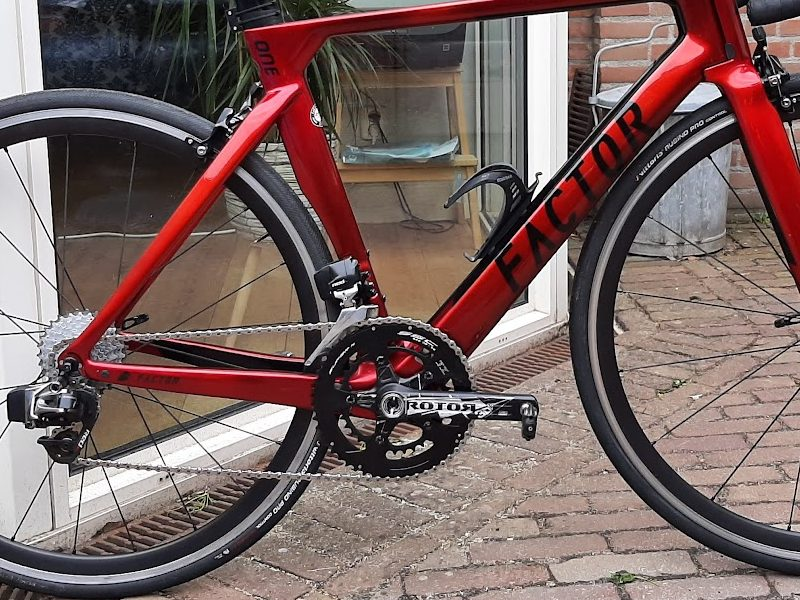
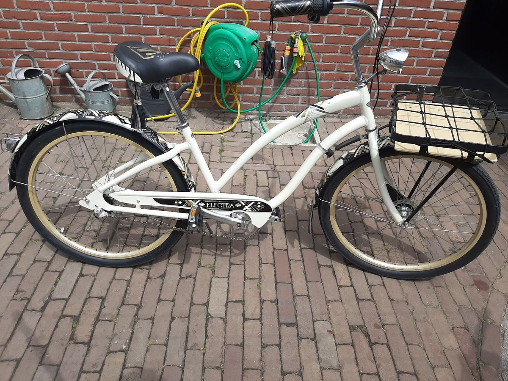
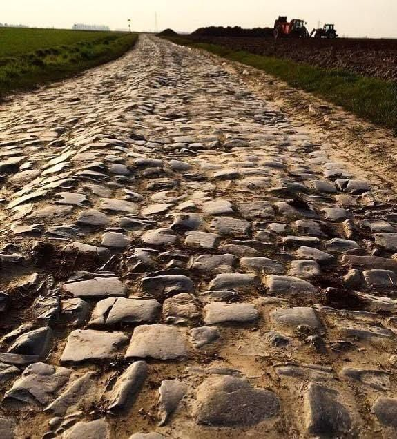

In Oud Gastel. Ook gewone fietsen en e-bikes zijn welkom. We werken op afspraak: stuur ons even een WhatsApp.
Snel en goed geholpen!Jasper L. · Google
We zijn gespecialiseerd in race-, cross-, gravel- en MTB-fietsen. Ook met je gewone fiets of e‑bike ben je bij ons welkom.

Onze specialiteit: reparatie en onderhoud van je sportfiets.

Ook voor je fiets van elke dag kun je bij ons terecht.
Interesse in wielen van FFWD? Stuur ons een berichtje, dan kijken we samen naar een passend advies.
WhatsAppWe werken alleen op afspraak. Zo regel je het:
Vertel kort wat er met je fiets aan de hand is.
Je hoort van ons wanneer je langs kunt komen.
Breng je fiets naar de Beatrixstraat 2B.

Een fietsenmaker in Oud Gastel met hart voor de wielersport. We zijn gespecialiseerd in race-, cross-, gravel- en MTB-fietsen, maar ook gewone fietsen en e-bikes zijn welkom.
Vragen over je fiets, of interesse in nieuwe wielen? Stuur ons een berichtje, dan kijken we samen wat bij je past.
Stuur een WhatsApp of bel even, dan plannen we samen een moment.
We werken alleen op afspraak. Een berichtje is genoeg.
Geen vaste openingstijden: je komt langs op het moment dat we samen afspreken.
Beatrixstraat 2B, Oud Gastel
Route plannen